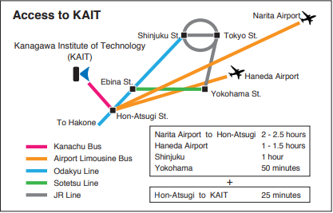

| Conference Venue | |
|---|---|
|
Kanagawa Institute of Technology https://en.kait.jp/ Address: 1030 Shimo-Ogino Atsugi Kanagawa, 243-0292, JAPAN |
|
|
The city of Atsugi, where Kanagawa Institute of Technology is located, is in the center of Kanagawa Prefecture, in the suburbs of Tokyo. From Hon Atsugi Station, the train accessibility is high to nearby cities as Tokyo and Yokohama.

|
|
| Hotel | |
| Rembrandt Hotel Atsugi https://rembrandt-group.com/atsugi/atsugi_en/english_a Map around Rembrandt Hotel: PDF 243-0018 Kanagawa, Atsugi, Naka-cho 2-13-1, Japan TEL. 046-221-0001 FAX. 046-224-9112 Access: Train: Odakyu line Honatsugi station (north exit) 5min. walk Bus: There is airport bus from Narita/Haneda airport to Honatsugi station Car: 3km from Tomei Atugi Expressway, 2km from Ken-O Ebina Expressway. |
|
| Contact | |
| International Affairs, Kanagawa Institute of Technology TEL: +81-46-291-3313 E-mail: ic@kait.jp |